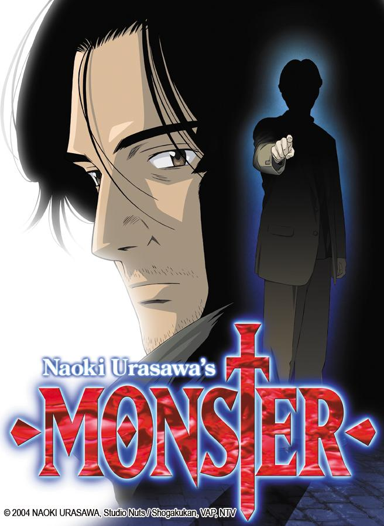
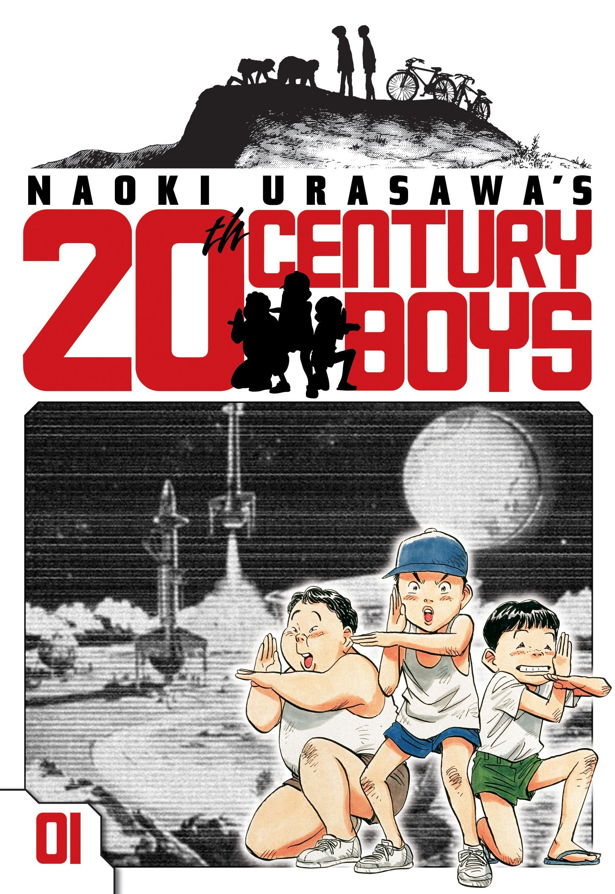

Naoki Urasawa
Photo Credit: The Japan News - Yomiuri. Urasawa standing besides an enlarged replica of a page from his manga Monster.
Urasawa's work is a reflection of people, mixed in with a taste of adventure, and baked full of moments that redefines the definitions of life as we know it. Here's my two most favorite works of his:
This manga was my introduction. Completely captivating me from the start. A journey through time and space. Of the futility of trying to justify the human mind. Choices made, opportunities lost. The story is simple, but its portrayal so very real.
A lost cause, a hero in a common man's shoes. This story wasn't one that needed to make sense and that's because the events transpired don't. As a superficial examination of the human soul, it succeeds. I loved it for its journey.
Read about Naoki Urasawa's life on his Wikipedia page!